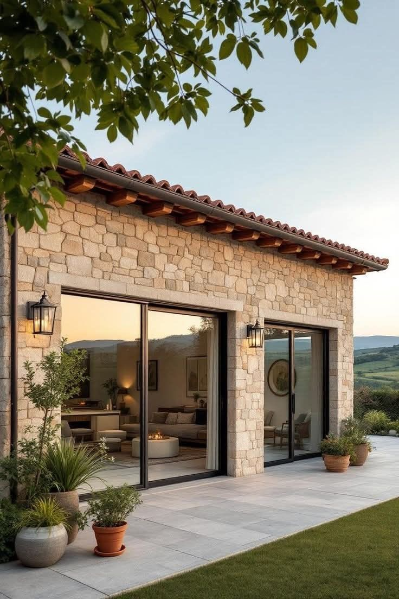
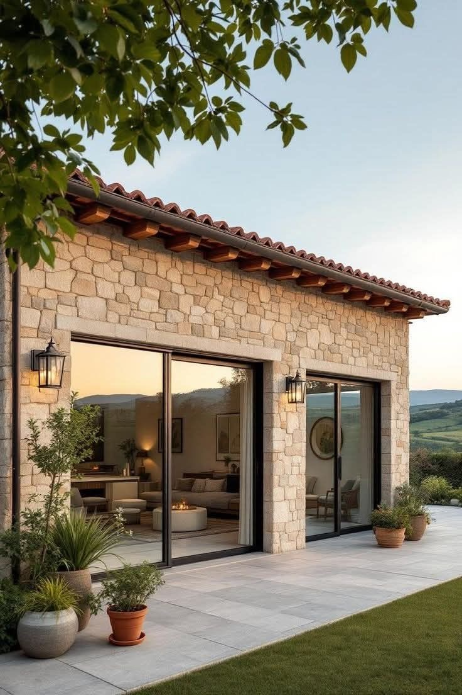
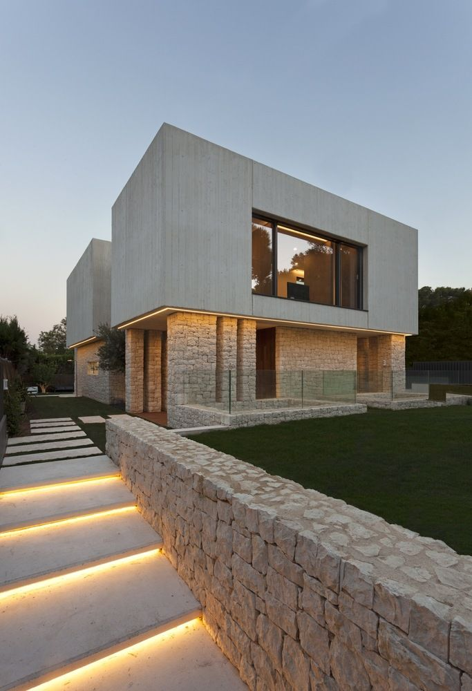
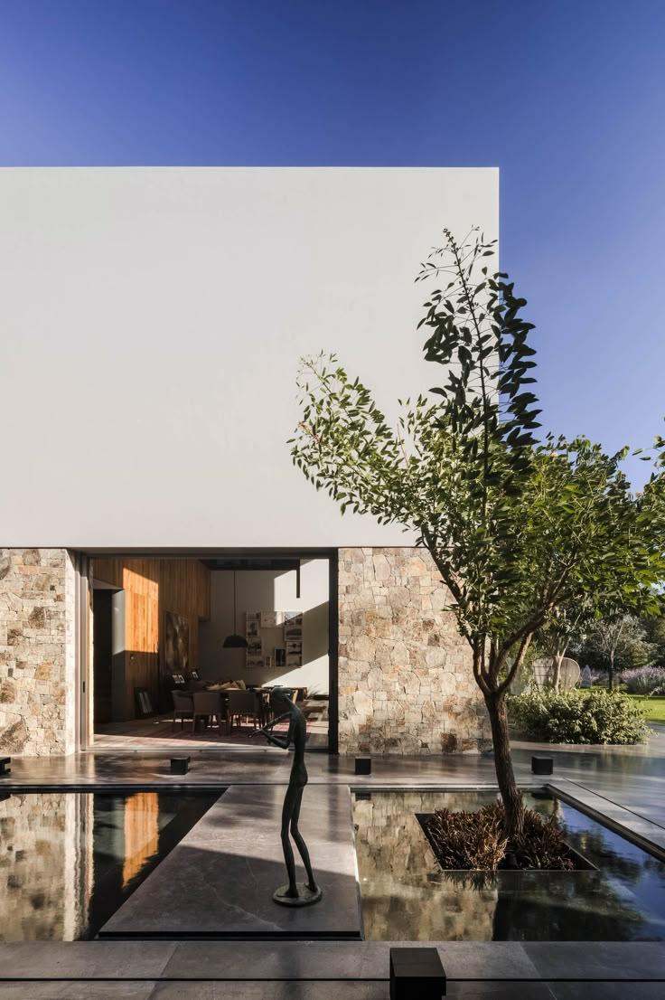
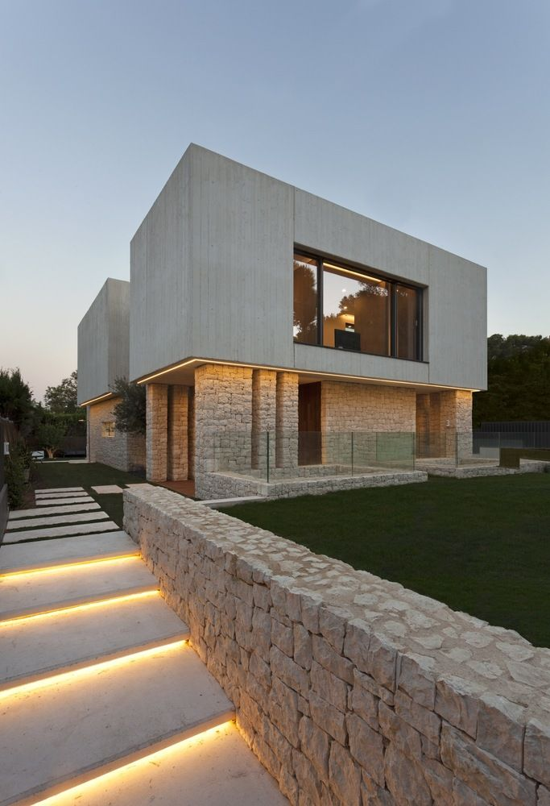
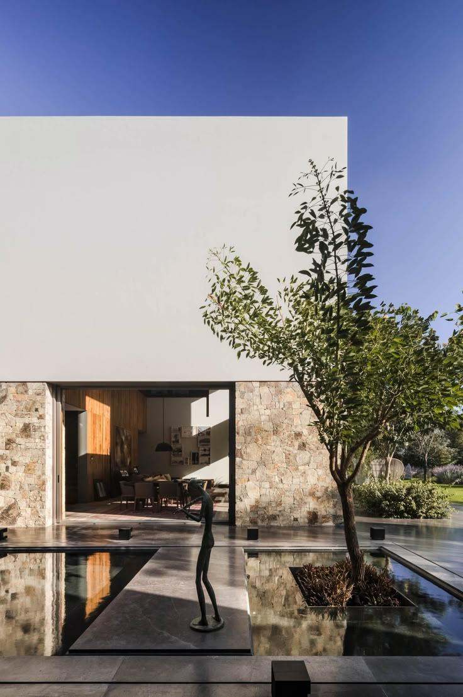

Neden Cephe Taş Kaplama?
Cephe taş kaplama, yapıların dış yüzeyine hem estetik hem de dayanıklılık kazandırmak için tercih edilen modern bir uygulamadır. Bek Stones olarak doğal taşlarla yaptığımız cephe kaplamalarıyla, hem geleneksel hem de modern mimarilere uyum sağlayan çözümler sunuyoruz.
Avantajları:
- Doğal ve şık görünüm
- Su, nem ve UV ışınlarına karşı dayanıklılık
- Isı ve ses yalıtımına katkı
- Bakım gerektirmeyen uzun ömürlü yapı
Uygulama Alanları:
Villa dış cepheleri, oteller, yazlık evler, iş yerleri ve kurumsal binalar başta olmak üzere tüm yapılarda cephe taş kaplama uygulamaları yapılabilmektedir.
Fiyatlandırma Nasıl Belirlenir?
Cephe taş kaplama fiyatları; kullanılacak taş türüne, uygulama alanının büyüklüğüne ve işçilik detaylarına göre değişiklik gösterir. Size özel teklif almak için aşağıdaki bağlantıdan bizimle iletişime geçebilirsiniz.
 



 


